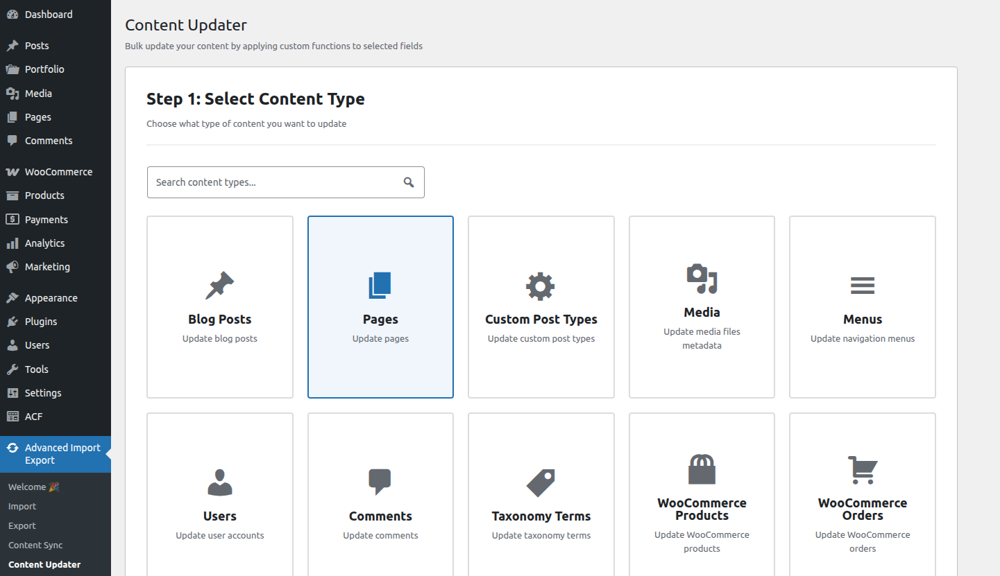
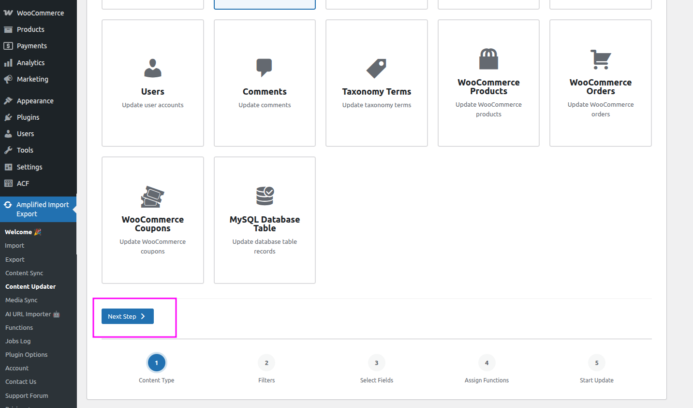
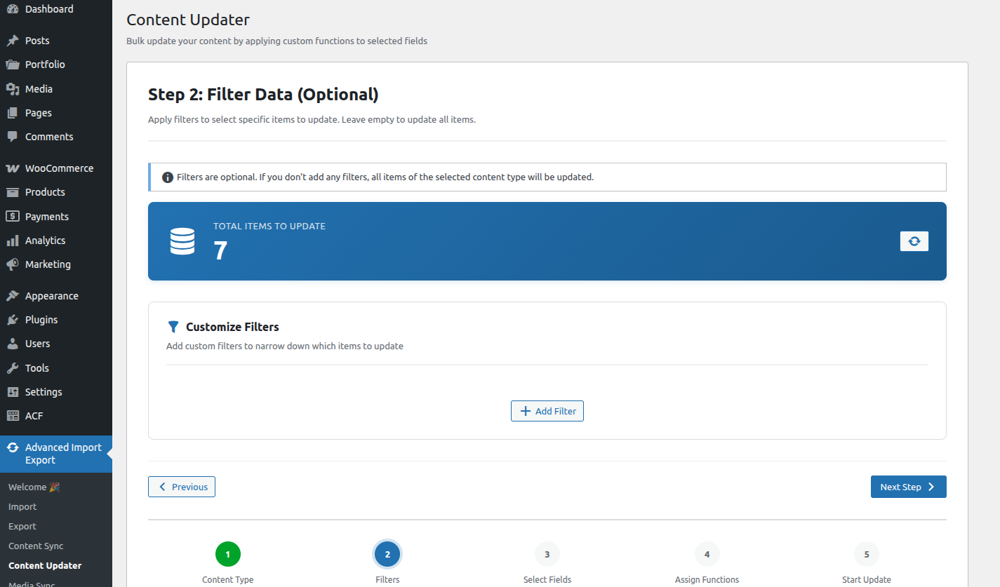
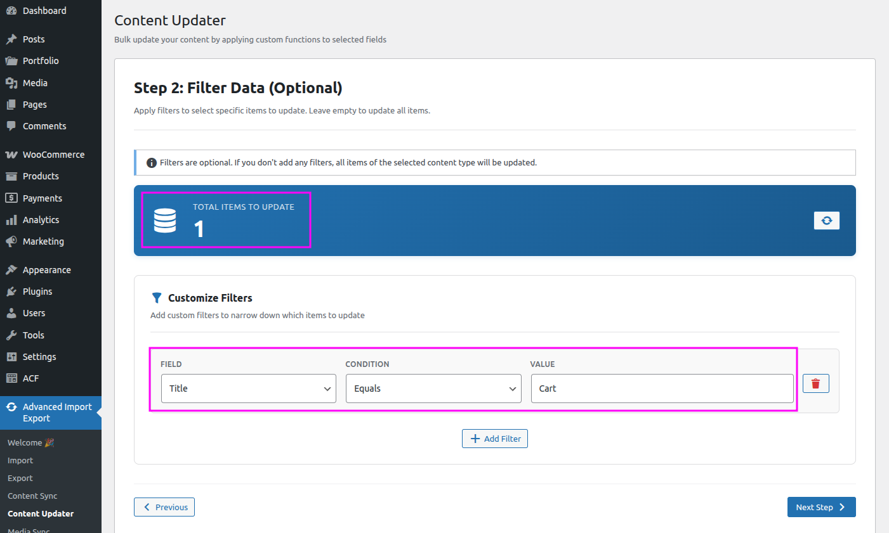
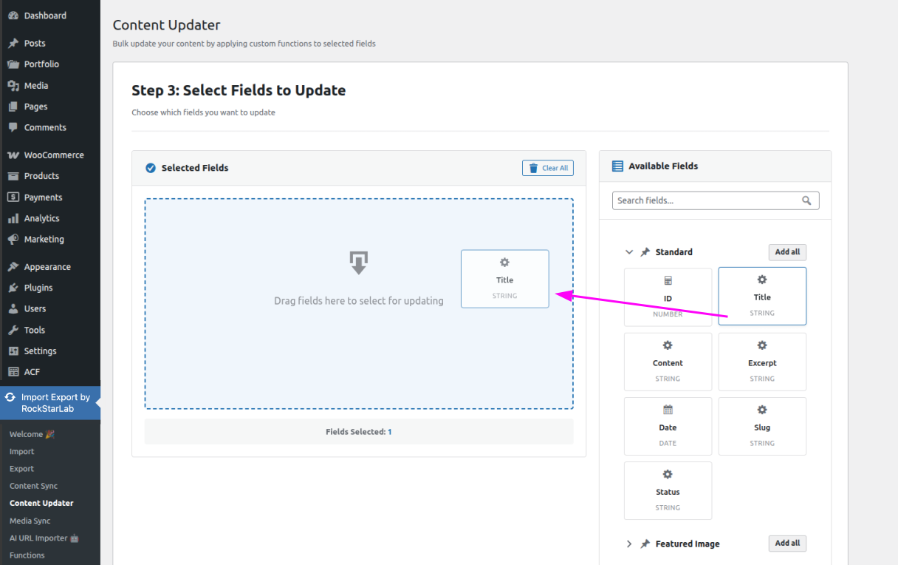
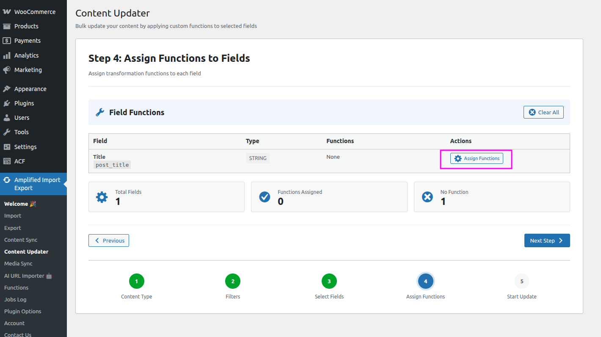
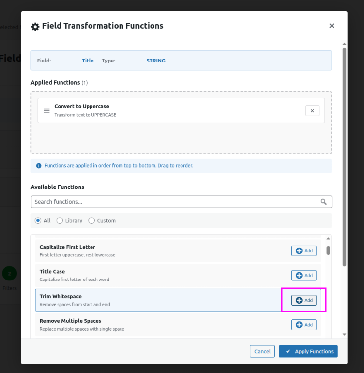
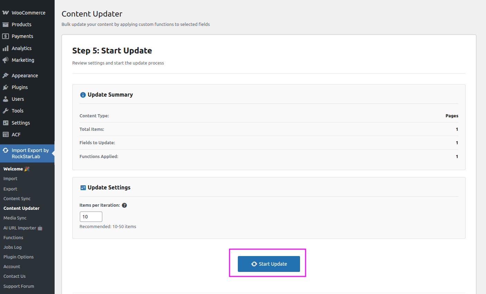

✏️ Content Updater
Apply bulk transformations to post fields across hundreds or thousands of records — without touching a single SQL query.
What is the Content Updater?
The Content Updater lets you select a content type, filter which records to target, choose specific fields, and then apply PHP transformation functions to each field value.
Example use cases:
- Convert all post titles to Title Case
- Replace an old domain URL with a new one inside post content
- Strip HTML tags from a custom meta field across all products
- Set a default value for a missing meta field on all draft posts
- Format all phone numbers stored in user meta to a consistent pattern
- UpdraftPlus — most widely used; supports cloud storage (Google Drive, Dropbox, S3)
- All-in-One WP Migration — simple one-click backup & restore
- BackWPup — scheduled backups to cloud or local storage
- Duplicator — backup, migrate, and clone your site
- Jetpack (VaultPress Backup) — real-time cloud backups by Automattic
Update Workflow
Step 1 — Select Content Type
Navigate to Import Export → Content Updater. Choose the content type you want to update — for example, Posts, Pages, Products, or Users.

Once you have selected the content type, click Next Step to proceed.

Step 2 — Filter Data
On the Step 2: Filter Data page you can narrow down exactly which records the update will be applied to. For example, you may want to update only posts that were published within the last month.

To add a filter, click Add Filter, then select the field you want to filter by and set the condition. You can add multiple filters to fine-tune your selection.

As you add or change filters, the record counter updates in real time so you can see exactly how many records will be affected before moving on.
When you are satisfied with the filters, click Next Step.
Step 3 — Select Fields to Update
Choose which fields the update will be applied to. Fields are selected using a drag-and-drop interface: drag the desired field from the right panel (available fields) into the left panel (selected fields). For example, to update the post title, drag Post Title from the right side to the left, as shown in the screenshot below.

Once you have selected all the fields you want to update, click Next Step.
Step 4 — Assign Functions to Fields
This step displays all the fields you selected in the previous step. For each field you can assign one or more transformation functions that will be applied to its value during the update.
Click the Assign Functions button next to a field to open the function selector.

In the dialog that appears, select the transformation functions you want to apply to the field. For example, you can choose a function to convert the field value to uppercase.

After selecting the functions, click Apply Functions to confirm your selection. Repeat for any other fields as needed, then click Next Step to proceed.
Step 5 — Start Update
The final step shows a summary of all the settings you have configured — content type, applied filters, selected fields, and assigned transformation functions. Review everything carefully before proceeding.

Once you are satisfied that everything looks correct, click Start Update to begin the bulk update process. The plugin will process records in the background and display real-time progress.